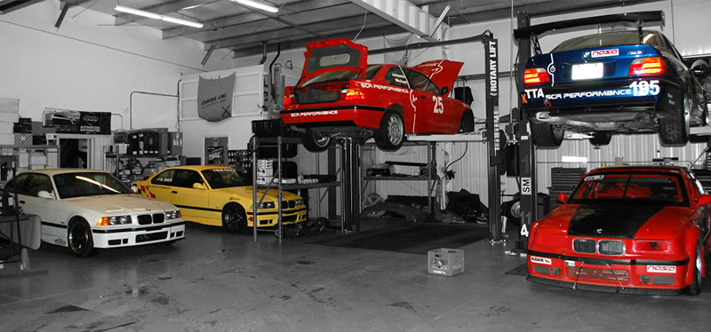

Connecting Car Owners, Mechanics, and Repair Shops. Find reliable professionals for your vehicle with ease and confidence.

Current Visitors
Active Mechanics
Trusted Repair Shops
Submit repair requests, compare quotes, and choose the best mechanic for your needs.
Receive job requests from verified clients and grow your reputation online.
Promote services, manage jobs efficiently, and expand your business network.
Every mechanic and repair shop is verified to ensure trust and reliability.
Payments and quotes are handled securely through our platform.
We provide support whenever you need assistance with your vehicle repair process.